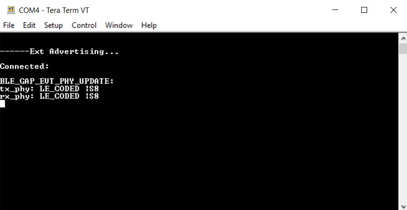
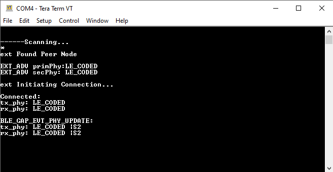
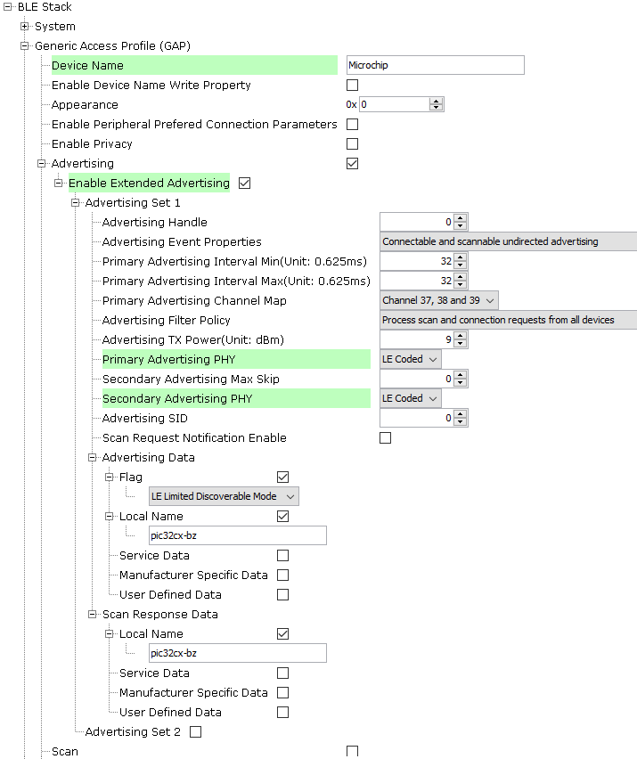
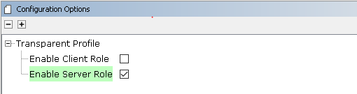
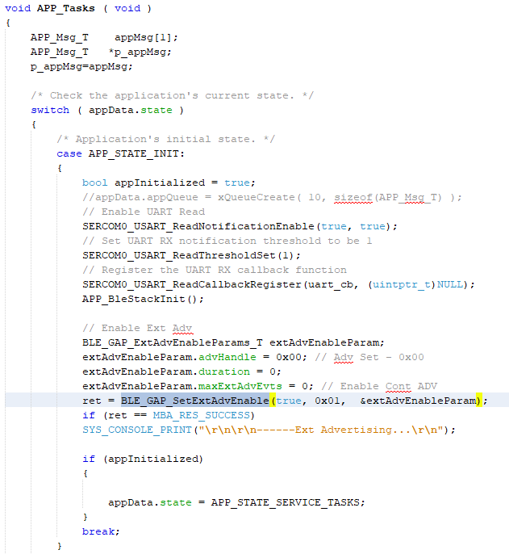
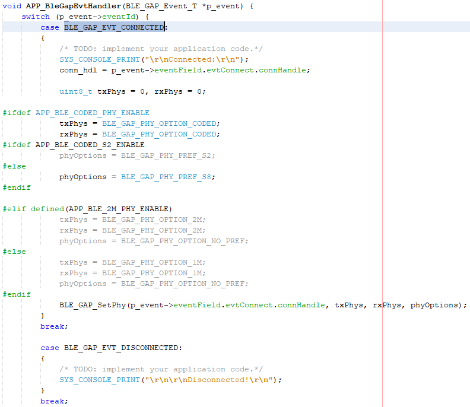
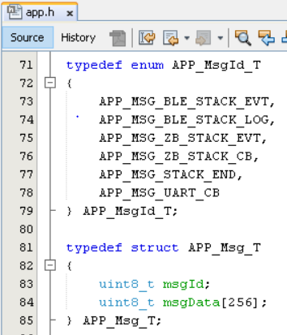

3.1.2.8 BLE Transparent UART Peripheral with LE Coded Phy
Getting Started with Peripheral Building Blocks
BLE Connection -> BLE Transparent UART with LE Coded PHY
Introduction
This document will help users create a peripheral device and send/receive characters between two connected BLE devices over the Microchip proprietary Transparent UART Profile with LE Coded PHY. The peripheral device will be a WBZ451 Curiosity board and the central device another WBZ451 board.
Users of this document can choose to just run the precompiled Application Example hex files on the WBZ451 Curiosity boards and experience the demo or can go through the steps involved in developing this application from scratch.
These examples each build on top of one another. We strongly recommend that you follow the examples in order, by learning the basic concepts first before progressing to the more advanced topics.
Recommended Reading
Hardware Requirement
| Tool | Quantity |
|---|---|
| WBZ451 Curiosity Board | 2 |
| Micro USB cable | 2 |
SDK Setup
Getting Started with Software DevelopmentSoftware Requirement
Smart Phone App
None
Programming the Precompiled hex file or Application Example
Programming the hex file using MPLABX IPE
-
Import and program the Precompiled Hex file:
<Harmony Content Path>\wireless_apps_pic32cxbz2_wbz45\apps\ble\building_blocks\peripheral\profiles_services\peripheral_trp_uart_codedPhy\hex\peripheral_trp_uart_codedPhy.X.production.signed.hex - Import and program the Precompiled Hex
file:
<Harmony Content Path>\wireless_apps_pic32cxbz2_wbz45\apps\ble\building_blocks\central\profiles_services\central_trp_uart_codedPhy\hex\central_trp_uart_codedPhy.X.production.signed.hex -
For more details on the steps, go to Programming A Device.
Note: Ensure to choose the correct Device and Tool information
Programming the Application using MPLABX IDE
-
Follow the steps mentioned in of Running a Precompiled Example.
-
Open and program the Application:
<Harmony Content Path>\wireless_apps_pic32cxbz2_wbz45\apps\ble\building_blocks\peripheral\profiles_services\peripheral_trp_uart_codedPhy\firmware\peripheral_trp_uart_codedPhy.X - 3. Open and program the Application:
<Harmony Content Path>\wireless_apps_pic32cxbz2_wbz45\apps\ble\building_blocks\central\profiles_services\central_trp_uart_codedPhy\firmware\central_trp_uart_codedPhy.X
For more details on how to find the Harmony Content Path, refer to Installing the MCC Pluggin.
Demo Description
Upon programming the application, the WBZ451 Curiosity board will start Connectable Extended Advertisements with LE Coded PHY. Another WBZ451 board as a central device scanning for these advertisements will connect to the device. After a connection has been established, data can be sent back and forth over UART between the two devices. Demo will print “Ext Advertising…” indicating the start of advertisements on a terminal emulator like Tera Term. Application data to be sent to the connected central device should also be entered in the terminal emulator.
Testing
- Using micro USB cables, connect the Debug USB on the Curiosity boards to a PC
- Program the precompiled hex files or application examples as mentioned.Note: One WBZ451 board should be programmed as a peripheral UART Coded PHY and the other board as a central UART Coded PHY.
- Open the Tera Term of the board programmed as peripheral_trp_uart_codedPhy and set the
“Serial Port” to USB Serial Device and “Speed” to 115200. Press SW1 to reset the board.
Tera Term should display the following message.
For more details on how to set the “Serial Port” and “Speed”, refer to COM Port Setup
 - Open the Tera Term of the board programmed as central_trp_uart_codedPhy and set the
“Serial Port” to USB Serial Device and “Speed” to 115200. Press SW1 to reset the board.
Tera Term should display the following message. 
- Exchange data between the peripheral and central devices by typing on one terminal and
seeing it on the other and vice versa.

Developing the Application from Scratch using MPLAB Code Configurator
This section explains the steps required by a user to develop this application example from scratch using the MPLAB Code Configurator.
-
Create a new MCC Harmony Project
-
2. To setup the basic components and configuration required to develop this application, import component configuration:
<Harmony Content Path>\wireless_apps_pic32cxbz2_wbz45\apps\ble\building_blocks\peripheral\profiles_services\peripheral_trp_uart_codedPhy\firmware\peripheral_trp_uart_codedPhy.X\peripheral_trp_uart_codedPhy.mc3For more details, refer to Import existing App Example ConfigurationNote: Import and Export functionality of the Harmony component configuration will help users to start from a known working setup of the MCC configuration. -
To accept dependencies or satisfiers, select "Yes"
-
Verify if the Project Graph window has all the expected configuration
Verify Advertisement,Connection and Transparent UART Profile Configuration
-
Select the BLE Stack component in the Project Graph and configure the following in the Configuration Options panel graph
 -
Select the Transparent Profile component in the project graph and configure the following

Generating a Code
For more details on code generation, refer to 15.2 MPLAB Code Configurator(MCC) Code Generation
Files and Routines Automatically generated by the MCC
After generating the program source from the MCC interface by clicking Generate Code, the BLE configuration source and header files can then be found in the following project directories.

The OSAL, RF System and BLE System initialization routine executed during program initialization can be found in the project file. This initialization routine is automatically generated by the MCC.

The BLE stack initialization routine executed during Application Initialization can be found in project files. This initialization routine is automatically generated by the MCC. This call initializes and configures the GAP, GATT, SMP, L2CAP and BLE middleware layers.
Autogenerated, advertisement data format

| Source Files | Usage |
|---|---|
| app.c | Application State machine, includes calls for Initialization of all BLE stack (GAP,GATT, SMP, L2CAP) related component configurations |
| app_ble\app_ble.c | Source Code for the BLE stack related component configurations, code related to function calls from app.c |
| app_ble\app_ble_handler.c | All GAP, GATT, SMP and L2CAP Event handlers |
| app_ble\app_trsps_handler.c | All Transparent UART Server related Event handlers |
| ble_trsps.c | All Transparent Server Functions for user application |
Header Files
-
ble_gap.hcontains BLE GAP functions and is automatically included inapp.c -
ble_trsps.his associated with APIs and structures related to the BLE Transparent Client functions for the application user
Function Calls
- MCC generates and adds the code to initialize the BLE Stack GAP, GATT, SMP and L2CAP in APP_BleStackInit()
- APP_BleStackInit() is the API that will be called inside the Applications Initial State
APP_STATE_INIT in
app.c
User Application Development
Include
-
User Action is required
ble_trsps.hinapp.ccontains BLE Transparent UART Server related APIsosal/osal_freertos_extend.hinapp_trsps_handler.ccontain OSAL related APIsdefinitions.hmust be included in all the files where UART will be used to print debug informationNote:definitions.his not specific to just UART but instead must be included in all the application source files where any peripheral functionality will be exercised
Set PUBLIC Device Address in app_ble.c
-
BLE_GAP_SetDeviceAddr(&devAddr);
BLE_GAP_Addr_T devAddr;
devAddr.addrType = BLE_GAP_ADDR_TYPE_PUBLIC;
devAddr.addr[0] = 0xA1;
devAddr.addr[1] = 0xA2;
devAddr.addr[2] = 0xA3;
devAddr.addr[3] = 0xA4;
devAddr.addr[4] = 0xA5;
devAddr.addr[5] = 0xA6;
// Configure device address
BLE_GAP_SetDeviceAddr(&devAddr);Start Advertisement in
app.c
- BLE_GAP_SetExtAdvEnable(true, 0x01, &extAdvEnableParam);

Connected & Disconnected Events
-
In
app_ble_handler.c, BLE_GAP_EVT_CONNECTED event will be generated when a BLE connection is completed
Connection Handler
- Connection handle associated with the peer peripheral device needs to be saved for data exchange after a BLE connection
- p_event->eventField.evtConnect.connHandle has this information
Transmit Data
- Add APP_MSG_UART_C to the generated APP_MsgId_T
Figure 3-170. .  -
BLE_TRSPS_SendData(conn_hdl , 1, &data); is the API to be used for sending data towards the central deviceNote: The precompiled application example uses a UART callback to initiate the data transmission upon receiving a character on UART
-
- Example for transmitting over UART using the BLE_TRSPS_SendData() API
uint16_t conn_hdl;// connection handle info captured @BLE_GAP_EVT_CONNECTED event
uint16_t ret;
uint8_t uart_data;
void uart_cb(SERCOM_USART_EVENT event, uintptr_t context)
{
APP_Msg_T appMsg;
// If RX data from UART reached threshold (previously set to 1)
if( event == SERCOM_USART_EVENT_READ_THRESHOLD_REACHED )
{
// Read 1 byte data from UART
SERCOM0_USART_Read(&uart_data, 1);
appMsg.msgId = APP_MSG_UART_CB;
OSAL_QUEUE_Send(&appData.appQueue, &appMsg, 0);
}
}
void APP_UartCBHandler()
{
// Send the data from UART to connected device through Transparent service
BLE_TRSPS_SendData(conn_hdl, 1, &uart_data);
}
// Register call back when data is available on UART for Peripheral Device to send
// Enable UART Read
SERCOM0_USART_ReadNotificationEnable(true, true);
// Set UART RX notification threshold to be 1
SERCOM0_USART_ReadThresholdSet(1);
// Register the UART RX callback function
SERCOM0_USART_ReadCallbackRegister(uart_cb, (uintptr_t)NULL);
else if(p_appMsg->msgId==APP_MSG_BLE_STACK_LOG)
{
// Pass BLE LOG Event Message to User Application for handling
APP_BleStackLogHandler((BT_SYS_LogEvent_T *)p_appMsg->msgData);
}
else if(p_appMsg->msgId==APP_MSG_UART_CB)
{
// Pass BLE UART Data transmission target BLE UART Device handling
APP_UartCBHandler();
}
Receive Data
- BLE_TRSPS_EVT_RECEIVE_DATA is the event generated when data is sent from the central device
- Use the BLE_TRSPS_GetDataLength(p_event->eventField.onReceiveData.connHandle, &data_len); API to extract the length of the application data received
- BLE_TRSPS_GetData(p_event->eventField.onReceiveData.connHandle, data); API is used to
retrieve the dataNote: BLE_TRSPS_Event_T p_event structure stores the information about the BLE transparent UART callback functions
- Example for printing the received data from the central device over UART
/* TODO: implement your application code.*/
uint16_t data_len;
uint8_t *data;
// Retrieve received data length
BLE_TRSPS_GetDataLength(p_event->eventField.onReceiveData.connHandle, &data_len);
// Allocate memory according to data length
data = OSAL_Malloc(data_len);
if(data == NULL)
break;
// Retrieve received data
BLE_TRSPS_GetData(p_event->eventField.onReceiveData.connHandle, data);
// Output received data to UART
SERCOM0_USART_Write(data, data_len);
// Free memory
OSAL_Free(data);Where to go from here
-
3.2.1 BLE Sensor App – this app utilizes the Transparent UART building block